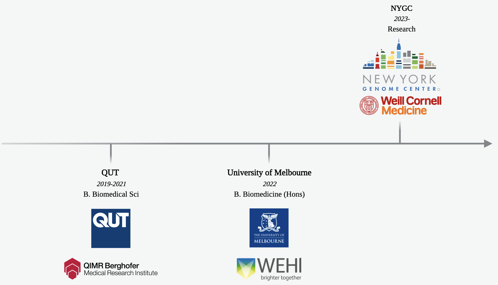

🧬 My Research 🧬
Back to main site
I'm deeply interested in emerging biotechnologies with far-reaching implications on our understanding of human diseases, and progressing the
Life Sciences Revolution.
Themes: Systems Biology, Immunology, Omics


New York Genome Center (Starting Mar/Apr 2023)
Will be working on tech development and application of single-cell epigenomics and multiomics tools with Chenxu Zhu.
High-throughput sequencing technologies have revolutionized the field of genomics by enabling the sequencing of entire genomes at rapid pace and low(er) cost. Innovative techniques allowing the sequencing of epigenetic states such as DNA methylation, histone modifications, and chromatin accessibility have also impacted the field of epigenomics.
Now, parallel sequencing and integration of multiple modalities holds significant promise for decoding complex states and function across all cell types and diseases such as cancer and neurodegeneration.
Read more about the field of
Epigenomics, the
Human Genome Project (an international-scale effort to sequence the entire human genome from 1990-2003), and the
Center for Integrated Cellular Analysis.

Walter and Eliza Hall Institute (WEHI), Melbourne, Australia (2022)
Worked in the lab of Phil Hodgkin with Su Heinzel, building off of an unpublished finding in the regulation of lymphocyte clonal expansion and cell fate timers
Lymphocytes undergo massive clonal expansion upon activation to eliminate foreign pathogens. After clearance, this dramatic expansion is followed by a contraction phase which is essential to maintaining homeostasis within the host. Previous work demonstrated that this is mediated by two intrinsic cell fate timers that induce cell death and/or division cessation (independently). Studying how this process works will lead to a better understanding of immune disorders such as lymphoma. Here is a review on the topic and a general layman video of the immune response

Queensland Institute of Medical Research (QIMR), Brisbane, Australia, (2021-22)
Worked in the lab of Harsha Gowda using a mass-spectrometry based proteomics approach to predict combination immune-checkpoint blockade (ICB) therapy
Immune checkpoint inhibitors (ICB) have revolutionzed cancer therapy by harnessing the power of the immune system to fight cancer. However, only a small subset of patients respond to ICB. Discovery of predictive biomarkers to guide optimal patient selection is the next step in the development of this promising treatment. Here is a simple explanatory video, or comprehensive review on the topic
My Journey
